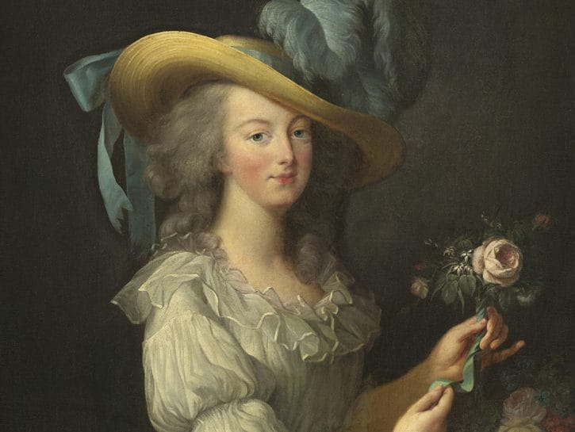

IL TRUCCO DAL XXVI AL XXVIII SECOLO
La casata dei Tudor e la regnanza di Elisabetta I d'Inghilterra portarono un periodo di prosperità e apprezzamento dell'arte cosmetica. La regina, infatti, inziò il trend del look pallidissimo, dalla pelle di porcellana che rimase popolare sino al 1800. Per schiarire la pelle veniva utilizzata la biacca, nonchè carbonato di piombo che, se utilizzato per lungo tempo, era tossico e apportava significativi problemi come cicatrici e, in rari casi, anche la morte.
Elisabetta era anche solita rasare l'attaccatura dei capelli in quanto, avere la fronte alta sembrava essere una caratteristica d'eleganza aristocratica.
Il diciottesimo secolo, però, rimane emblematico, caratterizzato da un gusto per l'eccesso di cui Maria Antonietta era sicuramente l'antesignana. Famosi erano i suoi rituali di toelettatura a cui avevano accesso solamente i membri favoriti più stretti. Rose Bertin, sua stilista e consulente d'immagine personale, le procurava anche il make up di cui aveva bisogno. Uno dei cosmetici preferiti di Maria Antonietta era il rouge: un prodotto combinato di cere e carminio (derivato dalle cocciniglie) che veniva applicato su labbra e gote per donarle il celeberrimo look denominato "bianco e rosso".
